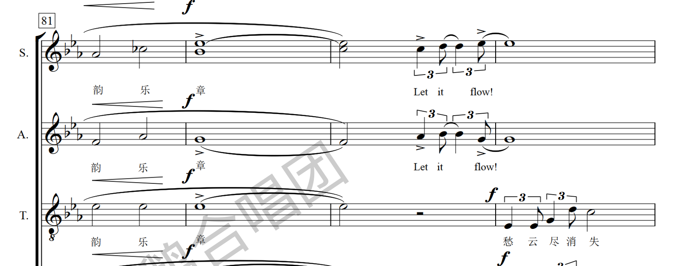
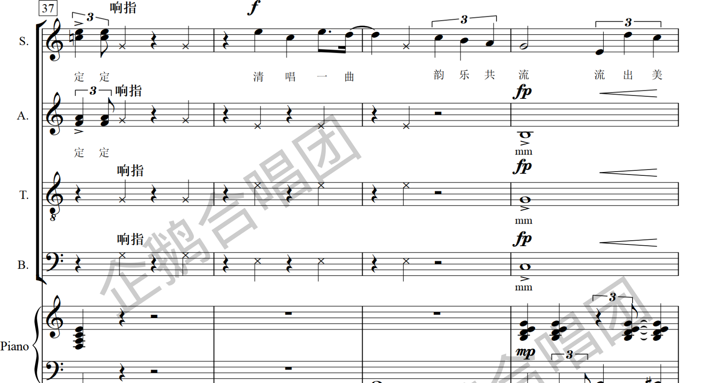

这份速览默认你已经能认谱号、拍号、音符时值和常见力度记号，因此不再逐一扫盲，只把《韵乐共流》这首作品值得排练时留意的信息与技术要点拎出来，方便快速进谱、心里有数。
1全曲基本参数
结构上是一首典型的渐进式抒情合唱：从散板独白起，进入稳定的抒情主体，中段引入人声打击（响指）并向上小三度转调（C → ♭E），最后在四部齐唱中冲到 ff 收束。全曲的抒情质感主要靠大量三连音与钢琴踏板铺底的流动织体撑起来。

8（低八度记谱）。2结构与情绪脉络
按速度、调性、织体的变化，全曲大致分四段。排练时可按此分段抠：
| 段落 | 大致小节 | 速度 / 表情 | 调性 | 力度 | 要点 |
|---|---|---|---|---|---|
| Ⅰ 引入 | 1 起 | 自由地 ♩=96 molto rubato | C 大调 | p | 散板独白，节奏可伸缩；重呼吸与 legato |
| Ⅱ 主体 | 15 起 | 优雅地 ♩=100 | C 大调 | mp–mf | 钢琴"节奏流畅而稳定"+带踏板进入；三连音织体铺开 |
| Ⅲ 过渡 | 约 37 / 55 | — | C → ♭E | fp · cresc. | 哼鸣（mm）+ 响指（×符头）；约 55–58 小节间完成转调 |
| Ⅳ 高潮 | 58 起 | — | ♭E 大调 | f → ff | 四部齐奏，密集三连音 + 重音；结尾再现响指收束 |
3需要留意的技术点
① 转调：C → ♭E（上行小三度）
约在第 55–58 小节之间完成，调号从无升降变为三个降号。之前的 C 大调段落不要提前带 ♭ 色彩；转调后整体音区、和声亮度都上一个台阶，正是为高潮蓄力。此处也常伴随 cresc.，注意力度是"顶上去"而非突然跳强。

② 三连音是全曲主要节奏语汇
人声与钢琴都大量使用三连音（钢琴间奏处还出现六连音）。演唱时三个音要均匀、不赶，尤其在 ♩=100 的主体段，避免把三连音唱成"附点+短音"的惯性节奏，否则流动感尽失。
③ 响指（×符头）＝人声打击
标注"响指"的段落用 × 符头记谱，只做节奏、不发音高。出现在过渡段（约 37 小节起）与结尾两处。排练要点：响指要整齐、卡在拍点上，把它当独立的打击声部对待；音量需与当下人声力度相称，别喧宾夺主也别怯场。

④ 力度与表情：幅度大，注意层次
全曲力度跨度 p → ff，并用到 fp（先强后即弱）这一较"戏剧化"的记号，多落在哼鸣长音上——需要瞬间的强起再收，控制力要求较高。表情术语层面注意区分：molto rubato（引入段可自由伸缩）与 a tempo（回原速）的交替，是第一段"呼吸感"的关键。
| 记号 / 术语 | 含义 | 本曲用法提示 |
|---|---|---|
| fp | 先强后立即弱 | 多在 mm 哼鸣长音，需干净的强起→收弱 |
| ff | 最强 | 仅结尾高潮，勿提前用满，留出增长空间 |
| molto rubato / a tempo | 大幅自由伸缩 / 回原速 | 引入段交替出现，决定散板的呼吸 |
| cresc. | 渐强 | 转调前后推动力度，配合 < 夹号 |
| > / 楔形 v | 重音 / marcato | 高潮段密集；marcato 在本谱印为开口朝下的楔形 |
| 带踏板 | 钢琴延音踏板 | 主体段起铺流动织体，随和声换踏板 |
⑤ 声部与文本
男高音行用带 8 的高音谱号（实际低八度），对男声音区判断别看错。文本为粤语，另有 ah / mm / ooh 衬词与英文点题句 "Let music flow"（呼应曲名）交织；主题句"造韵乐流 / 韵乐共流"分见于第 6、15 小节附近。粤语咬字与线条的连贯（legato）是抒情段的完成度关键。
4排练一句话备忘
ff 留足冲量。其余符号按常规处理即可。